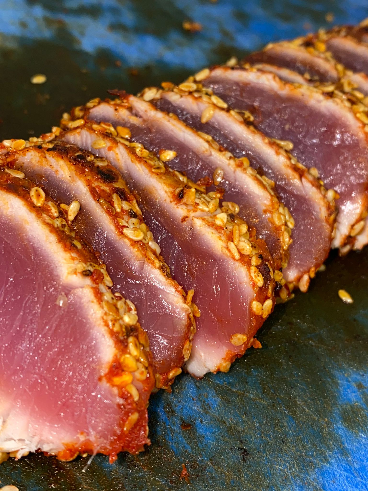
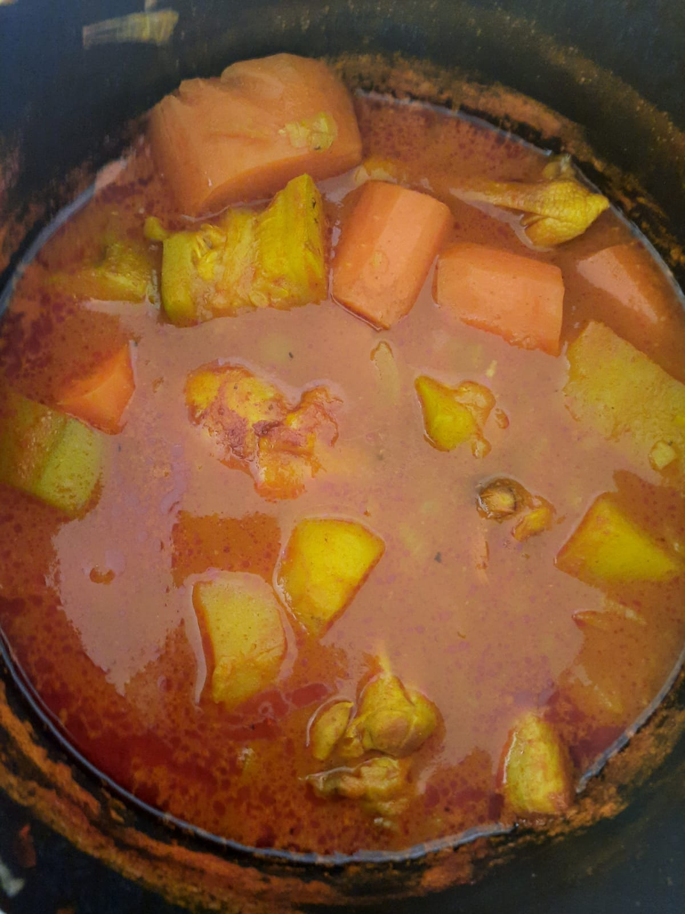

Tuna Tataki

Ingredients
- 350g of fresh red tuna
- 2 tablespoons of oil
- 3 tablespoons sesame seeds
- ginger rape
- 3 tablespoons of sweet soy sauce
- 2 tablespoons of sesame oil
Receipe
- Cut tuna into thick slices.
- Combine all marinade ingredients except sesame seeds.
- Dip tuna in marinade and turn over so that it is well coated.
- Let marinate for 1 hour in the refrigerator.
- Remove the tuna slices from the marinade and roll them in the sesame seeds.
- In a hot frying pan with a little oil, sear the tuna very quickly on each side. It must remain raw inside.
- Cut the tuna into thinner slices before serving with wasabi, soy sauce and pickled ginger, for example. You can also serve it with the marinade.
Click here to see a tutorial
Eggplant

Receipe
- Put 1 big eggplant in the oven at 200 degress celcius for 1 hour.
- Remove the skin of the eggplant.
- Mix it with some mayo, garlic, olive oil and salt.
Olives chicken

Receipe
- Put chicken legs in a baking dish.
- Add one oignon, green olives and some garlic.
- Spread some chicken powder, tumeric, cumin and coriander.
- Put in the oven under grill at 200 degrees celsius for 1 hour.
Couscous

Receipe
- Brown one oignon in olive oil, add some chicken and mix them together.
- Add some tumeric, paprika, coriander and tomato paste.
- Add water to the top.
- Add zuchinni, potatoes, sweet potatoe, carrots and chickpeas.
- Boil it for one hour.
Meat Balls

Receipe
- In a large pot heat some olive oil over medium-low heat.
- Once hot, add the onion and garlic, sauté until onions are translucent.
- Stir in the tomato paste and cook for 1 minute.
- Stir in the crushed tomatoes, salt, and pepper, cook it for 30 minutes.
- In a large bowl, mix round beef, one egg, and seasonning like cumin and garlic powder.
- Mix it and create balls, put them in the sauce and cook them for 20 minutes.